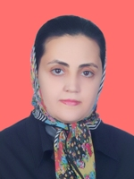

|
|
محبوبه کرمی عضو کمپین 1میلیون امضا بازداشت شد
جمعه24 خرداد 1387

تغيير براي برابري : محبوبه کرمی از اعضای کمپین 1میلیون امضا، بازداشت شد. مادر کرمی با تائید این خبر گفت:« ساعت 10 صبح محبوبه برای انجام کاری از خانه خارج شد. حین بازگشت از میدان تجریش با من تماس گرفت و گفت که در اتوبوس است. نرسیده به پارک ملت با منزل تماس گرفت و گفت او را بازداشت کرده اند.
رضوان مقدم دیگر عضو کمپین 1میلیون امضا نیز برای پیگیری وضعیت در محل بازداشت کرمی در میدان ونک حاضر می شود، اما پیگیری های او نیز بی نتیجه می ماند.
مادر کرمی فردا باید برای عمل جراحی در بیمارستان بستری شود ولی می گوید به دلیل استرسی که بابت بازداشت دخترش به او وارد شده این عمل می تواند برای او خطرناک باشد وآرزو دارد هرچه زودتر دخترش آزاد شود.
خانم مساعدی پیگیری درباره وضعیت فرزندش را بی نتیجه خواند و افزود:« پسرم براي پيگيري وضعيت او به بازداشتگاه وزرا رفته است اما گفته اند کسی اینجا نیست